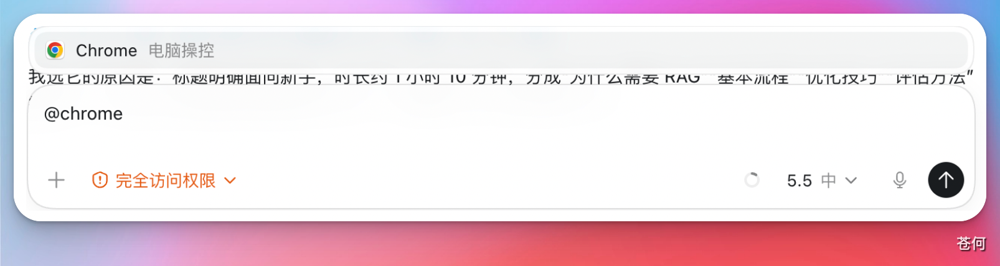
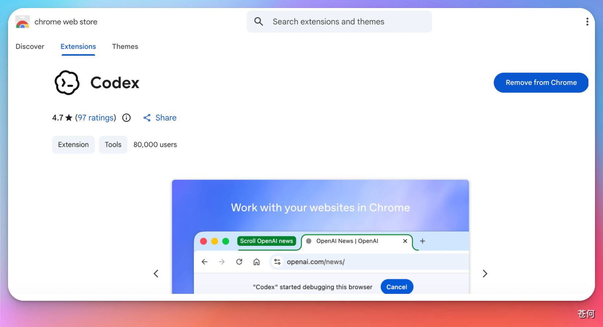
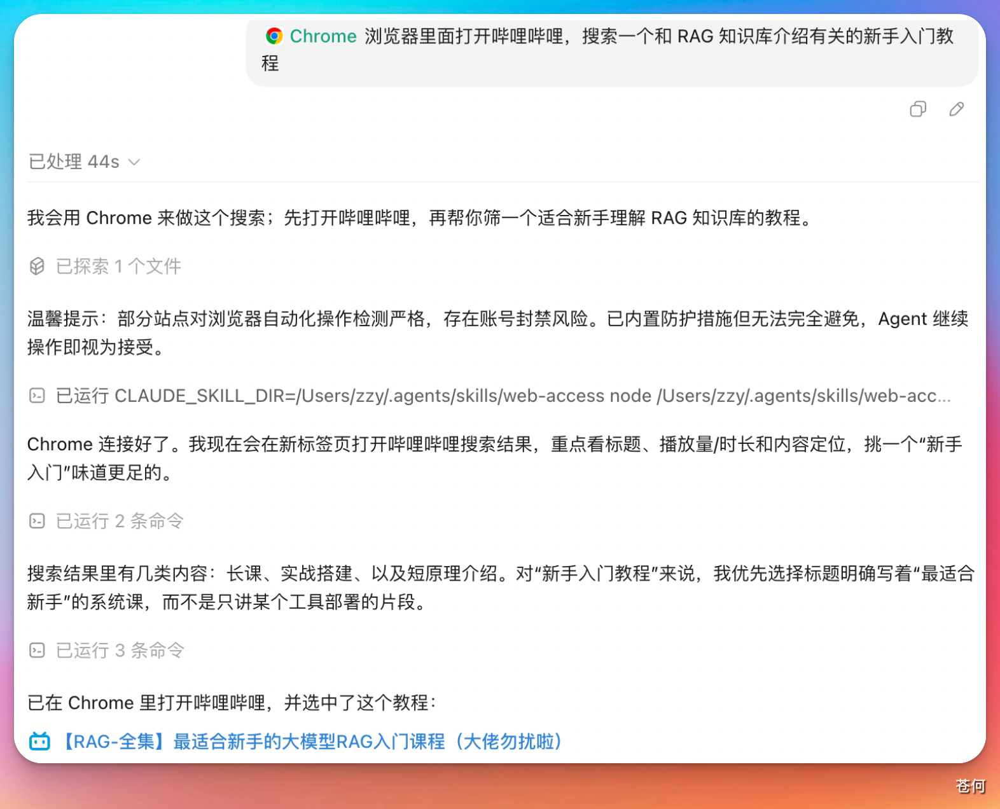

12 实战案例
Codex × Chrome：让 AI 直接控制浏览器
这个案例介绍如何让 Codex 借助浏览器相关能力完成网页操作任务，比如打开页面、搜索内容、点击结果和返回链接。
本站同步：案例已从后台资料源同步为站内页面，可直接阅读；账号、付款、权限、客户数据等敏感动作请人工确认。
这个案例介绍如何让 Codex 借助浏览器相关能力完成网页操作任务，比如打开页面、搜索内容、点击结果和返回链接。
💡 最后核对 官方资料最后核对日期：2026-05-27。本文参考 Using Codex with your ChatGPT plan 与 Codex use cases。具体插件名称、安装流程和入口位置可能会随客户端版本或工作区配置变化。
适用场景
- 让 Codex 帮你在网页里搜索资料。
- 让 Codex 打开某个站点并完成简单点击流程。
- 在不离开当前工作区的前提下，把浏览器操作接入任务链路。
使用前先理解一件事
这里说的“控制浏览器”，更准确地说，是让 Codex 借助浏览器或浏览器插件能力去完成网页交互。不同工作区里，入口可能叫 Chrome、Browser，也可能表现为浏览器插件或内置浏览能力。
因此，更稳妥的理解方式是：
- 在当前工作区确认是否已经启用了相关浏览器能力。
- 如果是第一次使用，按界面引导完成浏览器侧安装或授权。
- 安装完成后，再在任务里明确告诉 Codex 你想让它做什么。
一个常见流程
如果你的客户端提供了 Chrome 相关插件或浏览器能力，常见流程通常类似这样：
- 在 Codex 桌面 App 中找到对应的浏览器能力并启用。
- 按引导完成浏览器侧的插件安装或连接配置。
- 回到任务中，明确描述目标网页、搜索词和预期输出。

第一次点击后会跳转到浏览器插件安装页，点击添加扩展即可

任务示例
你可以像下面这样给出一个明确任务：
请使用浏览器能力打开 Bilibili，搜索“RAG 知识库 教程”，找一个适合新手入门的视频，并把标题和链接返回给我。
一个类似任务完成后，Codex 可能会：
- 打开目标站点。
- 搜索你提供的关键词。
- 进入相关结果页。
- 把它认为最合适的结果链接返回给你。

你要重点检查什么
- 它打开的网站是不是你指定的那个站点。
- 搜索词有没有被错误改写。
- 点击结果后返回的是不是你真正需要的页面，而不是广告页或无关页。
- 如果涉及登录态、个人数据或付费后台，是否会超出你愿意授权的范围。
风险提醒
- 浏览器相关能力通常比纯文本任务权限更高，第一次使用时建议从只读、低风险页面开始。
- 不要直接让 Codex 操作带有支付、删除、发帖、提交表单等高风险页面，除非你准备全程复核。
- 如果教程依赖插件安装，未来界面名称或入口位置可能变化，因此文档里应优先描述“能力和流程”，而不是把某个按钮位置写死。